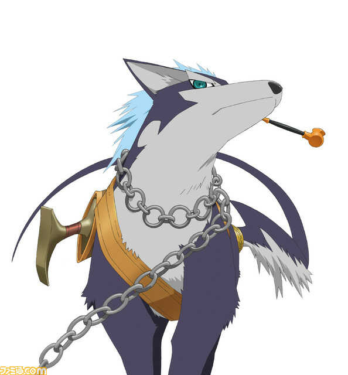
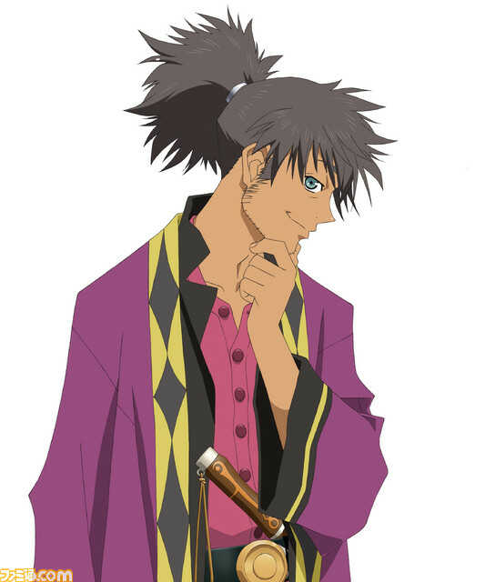

Yuri Lowell
Interpretado por: Kosuke Toriumi (JP) / Troy Baker/Grant George (EN)
El personaje principal del juego, un joven que vive en los barrios bajos de la capital, Zaphias, y ayuda a los necesitados. Es muy sarcástico y cínico pero tiene una buena formación. Al igual que su amigo de la infancia Flynn, una vez fue un caballero, lo que le dio la libertad de hacer viajes cortos fuera de su ciudad natal, pero se retiró debido a su aversión al gobierno. Ahora trabaja como guardaespaldas. Envidioso de Flynn, decide irse de la ciudad por su cuenta. Después de los hechos que lo llevaron a ser encarcelado, conoce a la princesa Estelle y parten juntos para descubrir el mundo más allá de la capital, Zaphias.
Estellise Sidos Heurassein
Interpretada por: Mai Nakahara (JP) / Eden Riegel (EN)
Si bien nombre real es Estellise, Yuri la apoda "Estelle", nombre que adopta por el resto de la aventura. Permaneció encerrada durante mucho tiempo en su castillo de Zaphias donde aprendió a luchar con espada. Queriendo explorar el mundo, aprovecha la oportunidad y se va con Yuri fuera de la capital. Está muy sorprendida de lo que descubre sobre el mundo y le gusta aprender leyendo libros.
Flynn Scifo
Interpretado por: Mamoru Miyano (JP) / Sam Riegel (EN)
Un caballero que lucha con espada y escudo. Compartió su infancia con Yuri aunque estuvieron muy contrastados, tanto física como eticamente. Tiene los mismos ideales de ayudar a los demás, pero antepone los intereses del gobierno. Como caballero, viaja regularmente para matar monstruos.
Repede

Interpretado por: Makoto Ishii
Si, es un perro. Si, tiene una pipa. Si eso no los convence de probar este juego, nada lo hará. Es muy amigable con los que acepta, pero odia cuando alguien que no conoce intenta tocarlo.
Rita Mordio
Interpretada por: Rika Morinaga (JP) / Michelle Ruff (EN)
Una investigadora de Aspio que estudia Blastia y odia que la interrumpan durante su investigación. Es una persona solitaria a la que no le gusta entablar relaciones con nadie. Karol la fastidia y no duda en ponerlo en su lugar cuando tiene la oportunidad.
Karol Capel
Interpretado por: Kumiko Watanabe (JP) / Julie Ann Taylor (EN)
Es un niño pequeño que dice ser parte del gremio "Les Lames Chasseresses". Ciertas circunstancias lo harán unirse al grupo de Yuri. A pesar de su buen humor, es bastante tímido y carece de confianza en sí mismo.
Judith
Interpretada por: Aya Hisakawa (JP) / Alison Lees-Taylor (EN)
Judith es una mujer joven y bonita de la tribu Krytian Moviéndose sobre la espalda de un dragón llamado Ba'Ul. A pesar de unirse al grupo, Judith tiene una misision secreta y no dejará que nada le impida cumplirla.
Raven

Interpretado por: Eiji Takemoto (JP) / Joe J. Thomas (EN)
Un hombre misterioso al que le gustan las cosas sencillas. Conoce a Yuri al comienzo del juego mientras están en la cárcel. Tiende a molestar al grupo con sus bromas, pero sabe cómo ponerse serio cuando es necesario. Sin embargo, sufre de un pasado del que no quiere hablar.
Patty Fleur
Interpretada por: Chiwa Saïto (JP) / Sandy Fox (EN)
Una joven pirata que viaja por el mundo en busca del romance y el legendario tesoro del famoso pirata Aifread. A pesar de su apariencia, tiene una personalidad y forma de expresarse más acordes a las de un anciano.